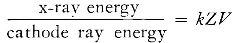
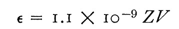
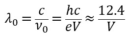
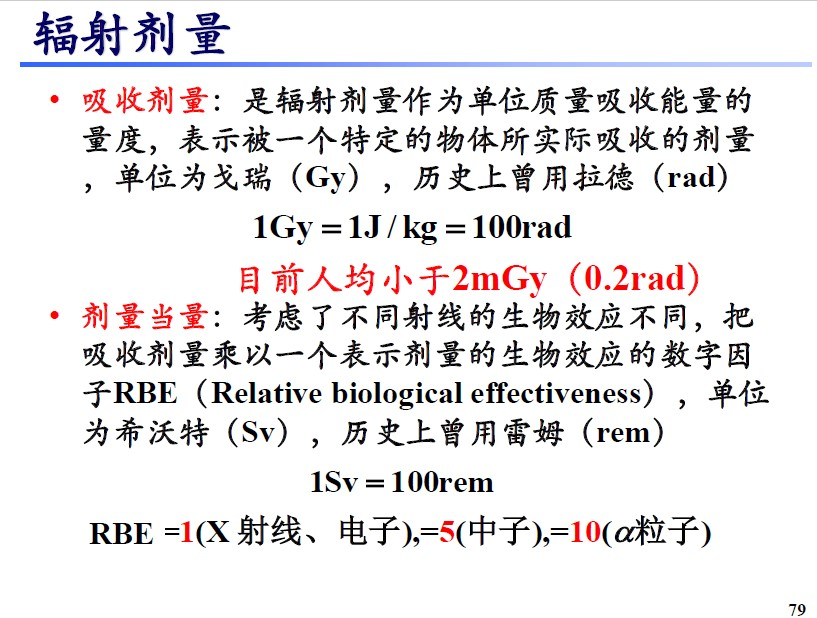
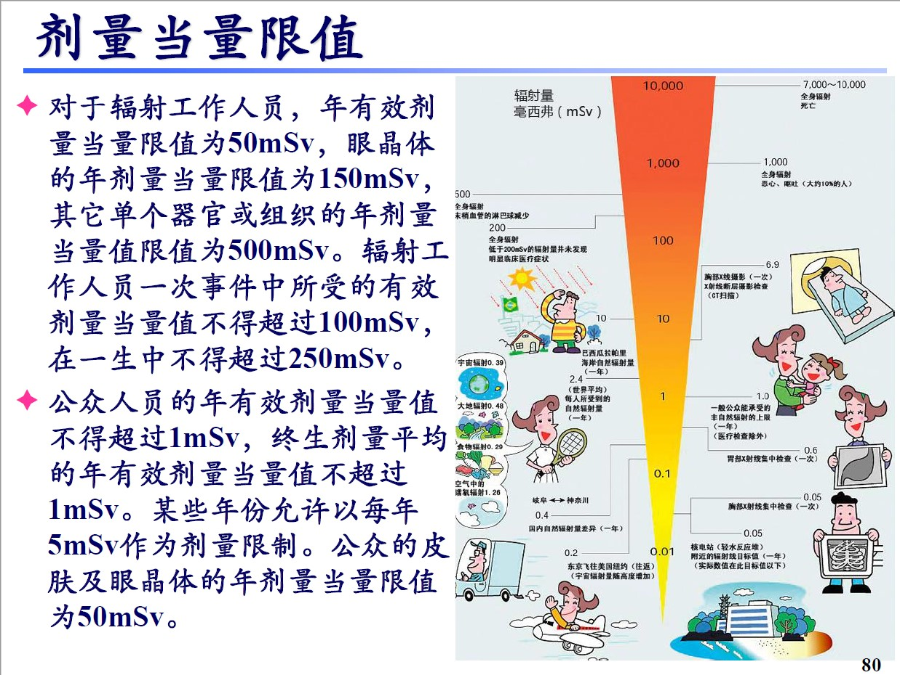
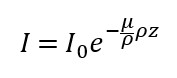

在具有高加速电压的电子显微镜中，电子轰击材料，会产生X射线。
显微镜设计缺陷、操作失误等因素可能会导致X射线泄露，危害显微镜研发者和使用者的安全。
因此需要估计电子显微镜中产生的X射线量级，据此制定相应的防护措施。
此网页为对X射线辐射量级计算的初步讨论，将电子枪和光阑整体看做是X射线管，根据前人X射线管能量产率计算一定电压和电流下产生的X射线，
并假设屏蔽材料按某一单一吸收率X射线，计算一年内操作人员受到的X射线辐射量。如有错误之处，还请批评指正。
（使用方法：在文本框中输入相应单位下物理量的值，不用输入单位，并点击计算按钮，得到计算结果。另外还需要您在别处查阅材料的质量吸收系数、密度等）
高能电子轰击金属靶材，会产生连续X射线和特征X射线。 不同波长射线对于人体伤害不同。这里考虑二者的总能量。 把电子枪看作是一个X射线管，使用前人的X射线管的计算结果。
根据参考文献（A.H. Compton and S. K. Allison, X-Rays in Theory and Experiment, p. 89. Van Nostrand, Princeton, N.J. (1935)）第89页，X射线管中电子轰击靶材，X射线的总产率大致符合经验公式
其中k为比例系数（量纲为电压的倒数），Z为靶材的原子序数，V为X射线管的工作电压。文献中接着提到了X射线产率公式中系数的具体取值：
其中，Z为靶材（被电子轰击的物质）原子序数，V为以伏特（volt）为单位的电压值。
因此，可以计算X射线产生的能量效率。（在文本框中输入相应单位下物理量的值，不用输入单位，并点击计算按钮）
* *测量电子枪中电极的电压和束流大小，计算输入功率。（为了方便也可尝试用科学计数法格式输入，例如把1200写为1.2e3，把0.012 写为1.2e-2，也可以把150000写为150e3）
*
而普通大众一年能忍受的非自然辐射剂量上限为1mSv
（世界平均）每人每年受到的自然辐射量为2.4mSv
辐射工作人员年有效剂量当量限值为50mSv
值得一提的是，由于产生的X射线光子最大能量为单个电子得到的能量，根据

式中V为加速电压，e为电子电荷，h为普朗克常量，ν_0为最大X射线频率，c为光速，λ_0为发射的X射线的最短波长。
含有数字“12.4”的式中波长单位为Å，电压单位为kV。
上述加速电压的电子显微镜辐射的最短波长为 ()nm，
连续谱中辐射量最多的波长约为1.5倍最短波长，即()nm。
辐射剂量当量的定义
辐射剂量当量的限值
产生的X射线并非单频率X射线，同种屏蔽材料对不同波长的X射线的屏蔽能力不同。也许可以查一查前人做过的实验计算一下
结果一不小心，上网搜索搜到一堆计算X射线的网页计算器，功能还挺强大，有的能直接给出各波段吸收率。 我就不重复造轮子了
也许直接搜索“x ray calculator”？ 但是我搜到的网页的目的与我们的目的——计算X射线泄漏量，并不强相关。且我搜到的那些网页都是英文。于是我还是继续写这个网页吧。可以在此网站上查阅单一材料对于具有不同能量的光子的质量吸收系数 NIST-单质的质量吸收系数
射线通过屏蔽材料，其强度随着屏蔽材料的厚度呈指数衰减。可计算透过屏蔽材料的射线强度
其中I为透过的射线强度，I_0为初始射线强度，e为自然常数，μ/ρ为材料对相应波长X射线的质量吸收系数，ρ为材料的密度，z为材料的厚度